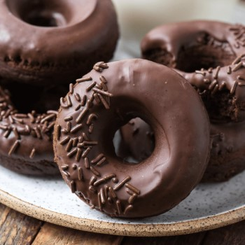

chocolate-donuts

Ingredients:
- precise
- Baking powder
- salt
- coconut milk
- egg
- vanilla
- butter
- cacao
To decorate:
- liquid chocolate
- Pharmacell chocolate
Directions
Mix flour, sugar, baking powder, cocoa and salt and stir.
Bring another bowl and put eggs, milk, butter and vanilla.
Put the liquid mixture on the dry mixture and stir them.
Spread the dough on a floured surface and cut it with a circular cutter in the shape of a donut, then put it on a greased tray
with butter.
Put the donuts into the oven until they are done.
Dip the donut in the liquid chocolate, then sprinkle it with vermicelli, then serve it.